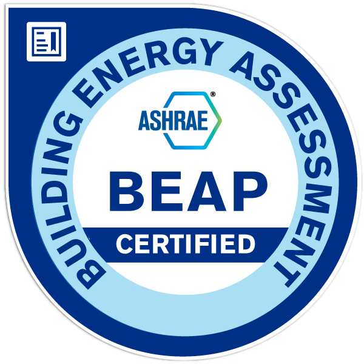

— Building Energy Assessment Professional

Trained and Certified:
NFPA 70E Standard for Electrical Safety in the Workplace, UL Building Envelope Fundamentals, and Energy Modeling in IESVE
Hayden Baumgardner has 10 years of experience in the Engineering for Construction Industry. He has worked in the Industrial and Commercial sectors to save employers and clients millions of dollars in operation costs. During his time as a Building Systems Engineer for Nike's domestic factories, he reduced factory down time by over 1000%. Hayden has extensive experience in facility operations, building engineering, and construction management. His passion is to provide realistic and simple answers to building owners looking to operate with maximum efficiency. Hayden has a mechanical engineering degree from Purdue University and a Building Energy Assessment Professional (BEAP) license from ASHRAE. With his accreditations and well rounded experience he is a valuable resource to any large asset owner.